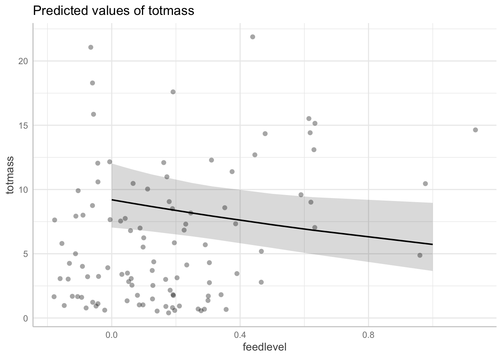
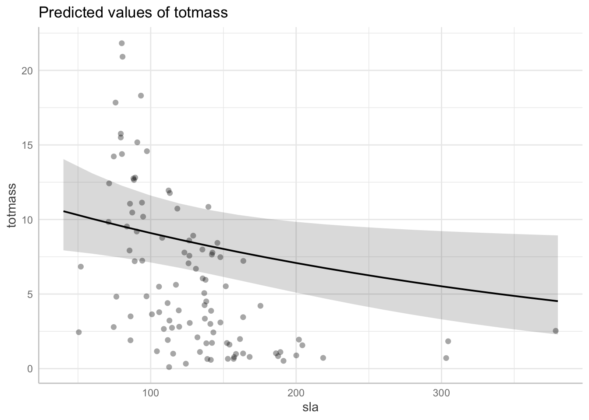
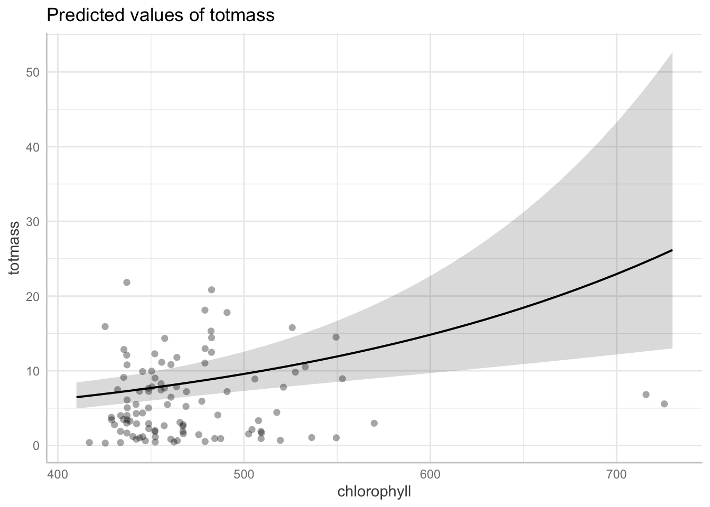
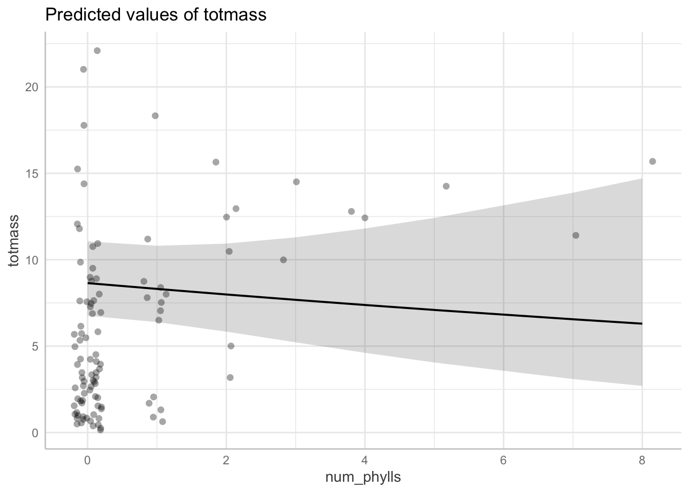

Code
# load in packages
library(tidyverse)
library(here)
library(janitor)
library(ggeffects)
library(performance)
library(naniar)
library(flextable)
library(car)
library(broom)
library(corrplot)
library(AICcmodavg)
library(GGally)Link to github Repo:
https://github.com/v-yc/ENVS-193DS_Homework-05
Sarracenia are carnivorous pitcher plants that obtain energy through an insect-based diet (Srivastava et al, 2011). Sarracenia are important because several members of the taxa are endangered and they are useful for conducting evolutionary and ecological studies (Srivastava et al, 2011). For example, Sarracenia have been found to be involved with top-down and bottom-up ecological processes in inquiline communities (Kneitel 2003).
Morphological characteristics have been found to play a role in prey capture and growth of Sarracenia plants (Cresswell 1993). I think it would be useful to predict individual biomass from morphological, physiological, and taxonomic characteristics to understand what limits the growth of Sarracenia plants and how different characteristics relate to one another. Information on limiting factors would be especially important for efforts in preserving endangered species within the Sarracenia genus.
The question that this study addresses is how do Sarracenia characteristics predict biomass? The hypothesis that I am testing is that species, feedlevel, and specific leaf area (sla) are predictors of biomass.
Two plants per species were treated with variable feeding levels from 0-0.25g wasps for small species, 0-0.5g wasps for intermediate species, and 0-1.0g wasps for large species (Ellison and Farnsworth). A total of 120 plants were surveyed and plants were fed once a week for 7 weeks (Ellison and Farnsworth).
For the purposes of my analysis, I only kept the variables I was interested in testing in the data set rather than using all of the 32 variables in the orginal data set. The variables I kept were total biomass, species, feed level, specific leaf area (sla), chlorophyll content, photosynthetic rate (amass), the number of pitchers and phyllodes produced, and the number of phyllodes produced. I created a visualization of the missing observations in the data set and found that five of the variables (chlorophyll, amass, sla, num_phylls, and num_lvls) have missing values. Three of the variables (totmass, species, and feedlevel) do not have any missing values. I removed the missing values from the data set because I do not know why these values are missing and if they are due to human error.
I created a visualization of Pearson’s correlation to investigate the strength of the relationships between different numerical predictor variables. I found that amass and sla had the highest correlation, with a Pearson’s R of 0.32. Since 0.32 is still far from 1, which represents perfect positive correlation, it does not seem like there are any pairs of variables in the data set that is concerning in terms of falsely skewing the data. In addition to the Pearson’s correlation plot, I used a pairs plot to investigate the relationships between variables. The scatterplots and histograms do not show distinct patterns and the Pearson’s R values do not show any strong correlations. These results support the previous conclusion that there are no pairs of variables in the data set that is concerning in terms of falsely skewing the data.
After these checks, I created a null model and a full model. The null model has no predictors of biomass. The full model includes species, feed level, specific leaf area (sla), chlorophyll content, photosynthetic rate (amass), the number of pitchers and phyllodes produced, and the number of phyllodes produced as predictors of biomass.
The assumptions of multiple linear regressions were tested for the full model visually with diagnostic tests and statistically with a Shapiro-Wilk test for normality and a Breusch-Pagan test for homoskedasticity. The residuals appeared to be somewhat normal but heteroskedastic with the diagnostic test and the residuals appeared non-normal and heteroscedastic with the statistical tests (p < .001). Consequently, the assumptions of multiple linear regressions are not met. It is normal for these assumptions to not be met with a large data set so I performed a log-transformation of the data set to create a model that better fits the assumptions of a multiple linear regression. After the log-transformation, the assumptions were met.
I created 3 additional models to determine which model best predicts the biomass of the pitcher plants. The second model includes species and sla as predictors of biomass. I chose these two variables because I think it is common for different species to have different biomass and I think a higher sla value might be a good predictor for greater biomass. The third model looks at species and feed level as predictors of biomass. I wanted to try testing feel level as a predictor because I thought a greater feed level would be a good predictor of greater biomass. The fourth model looks at species, feed level, and sla all together as predictors of biomass because I want to test how these variables might work together to predict biomass.
After creating the models, I conducted a variance inflation factor (vif) check to evaluate multicollinearity in all the models. I determined that none of the models display aspects of multicollinearity because none of the adjusted gvif values (third column) were above 5. Akaike’s Information criterion (AIC) value was calculated to compare the 4 models (full model and models 2-4). The full model has the lowest AIC value so it is the best model for predicting biomass compared to the other models.
# load in packages
library(tidyverse)
library(here)
library(janitor)
library(ggeffects)
library(performance)
library(naniar)
library(flextable)
library(car)
library(broom)
library(corrplot)
library(AICcmodavg)
library(GGally)# read in data set
plant <- read_csv(here("data", "knb-lter-hfr.109.18", "hf109-01-sarracenia.csv")) %>%
# make the column names cleaner
clean_names() %>%
# select the columns of interest (only retain these columns)
select(totmass, species, feedlevel, sla, chlorophyll, amass, num_lvs, num_phylls)gg_miss_var(plant)
Figure 1. Number of missing values for the variables of interest.
Subsetting the data by dropping NAs:
Since I took this data set from online, I do not know why there are NA values so for the purpose of this analysis, I will exclude them.
plant_subset <- plant %>%
# drops rows with NA values in the columns you specify
drop_na(sla, chlorophyll, amass, num_lvs, num_phylls) To investigate the strength of the relationships between different numerical predictor variables in our data set, we calculated Pearsons R values and displayed the results with a correlation plot.
# calculate Pearson's R for numerical values only
plant_cor <- plant_subset %>%
# not including totmass because it's the y variable
select(feedlevel:num_phylls) %>%
# make correlation matrix (plots variables against each other)
cor(method = "pearson")
# creating a correlation plot (visualizes the correlation matrix we made with cor() function)
corrplot(plant_cor,
# change shape of what's in the cells (ellipse pointing to right = positive relationship)
method = "ellipse",
addCoef.col = "black")
Figure 2. Correlation plot showing Pearson’s R values for all the combinations of pairs of numerical predictor variables. A value of 1 means perfect positive correlation, a value of -1 means perfect negative correlation, and a value of 0 means no correlation. Positive correlations are represented by the color blue and the direction of the ellipse pointing to the upper right; negative correlations are represented by the color red and the direction of the ellipse pointing to the upper left.
plant_subset %>%
# can include the species column now because pairs plots can include categorical variables too
select(species:num_phylls) %>%
ggpairs()
Figure 3. Pairs plots with histograms (left column), box plots (top row), correlation coefficients (upper right area), and scatter plots (lower left area). Each box in the pairs plot compares the two variables that intersect the box. The line graphs along the diagonal axis compare one variable against itself (eg. species against species).
To determine how species and physiological characteristics predict biomass, we fit multiple linear regression models.
# create a null model
# totmass ~ 1 means there is no predictor
null <- lm(totmass ~ 1, data = plant_subset)
# full model has all the variables in it
full <- lm(totmass ~ species + feedlevel + sla + chlorophyll + amass + num_lvs + num_phylls,
data = plant_subset)Diagnostic plots were used to visually assess assumptions. In addition, the Shapiro-Wilk test (null hypothesis: residuals are normally distributed) was used to assess normality and the Breusch-Pagan test (null hypothesis: residuals have constant variance) was used to assess homoskedasticity.
# set up a 2x2 grid to display diagnostic plots
par(mfrow = c(2,2))
plot(full)
# residuals look pretty normal because they are mostly along the QQ plot line
# looks heteroskedastic because even though line is pretty flat, residuals have a cone shapecheck_normality(full)Warning: Non-normality of residuals detected (p < .001).check_heteroscedasticity(full)Warning: Heteroscedasticity (non-constant error variance) detected (p < .001).# make null model for the log transformation
null_log <- lm(log(totmass) ~ 1, data = plant_subset)
# make a log-transformed full model with all the predictors
full_log <- lm(log(totmass) ~ species + feedlevel + sla + chlorophyll + amass + num_lvs + num_phylls, data = plant_subset)
# check assumptions again
plot(full_log)


check_normality(full_log)OK: residuals appear as normally distributed (p = 0.107).check_heteroscedasticity(full_log)OK: Error variance appears to be homoscedastic (p = 0.071).model2_log <- lm(log(totmass) ~ species + sla, data = plant_subset)
plot(model2_log) # looks pretty goodcheck_normality(model2_log) # looks goodOK: residuals appear as normally distributed (p = 0.128).check_heteroscedasticity(model2_log) # looks goodOK: Error variance appears to be homoscedastic (p = 0.074).model3_log <- lm(log(totmass) ~ species + feedlevel, data = plant_subset)
plot(model3_log) # looks pretty goodcheck_normality(model3_log) # looks goodOK: residuals appear as normally distributed (p = 0.339).check_heteroscedasticity(model3_log) # looks goodOK: Error variance appears to be homoscedastic (p = 0.110).model4_log <- lm(log(totmass) ~ species + feedlevel + sla, data = plant_subset)
plot(model4_log) # looks pretty goodcheck_normality(model4_log) # looks goodOK: residuals appear as normally distributed (p = 0.072).check_heteroscedasticity(model4_log) # looks goodOK: Error variance appears to be homoscedastic (p = 0.087).# gvif means general vif and it is calculated if you have categorical variables
# third row is transformed gvif
car::vif(full_log) GVIF Df GVIF^(1/(2*Df))
species 42.351675 9 1.231351
feedlevel 1.621993 1 1.273575
sla 1.999989 1 1.414210
chlorophyll 1.949828 1 1.396362
amass 2.872084 1 1.694722
num_lvs 2.813855 1 1.677455
num_phylls 2.995510 1 1.730754car::vif(model2_log) GVIF Df GVIF^(1/(2*Df))
species 1.648204 9 1.028149
sla 1.648204 1 1.283824car::vif(model3_log) GVIF Df GVIF^(1/(2*Df))
species 1.506337 9 1.023021
feedlevel 1.506337 1 1.227329car::vif(model4_log) GVIF Df GVIF^(1/(2*Df))
species 2.265982 9 1.046493
feedlevel 1.511088 1 1.229263
sla 1.653402 1 1.285847# calculate AIC values for each model
AICc(full_log)[1] 133.9424AICc(model2_log)[1] 154.0564AICc(model3_log)[1] 159.6218AICc(model4_log)[1] 155.8974AICc(null_log)[1] 306.0028I found that the full model including all the predictors (species, feed level, sla, chlorophyll content, amass, the number of pitchers and phyllodes, and the number of phyllodes) best predicted total biomass (F15,87 = 38.38, p \< 0.001, R2 = 0.85). I chose this as the best-fit model because it has the lowest AIC value, which means that it is the least complex model that best predicts the data.
Interpretation of your chosen model (1-3 sentences)
Visualization of model predictions for biomass as a function of the predictor
variable of your choice with an accompanying caption (caption: 1-3 sentences)
Discussion of results: what does this model mean biologically? (1-3 sentences)
Summary of the model:
summary(full_log)
Call:
lm(formula = log(totmass) ~ species + feedlevel + sla + chlorophyll +
amass + num_lvs + num_phylls, data = plant_subset)
Residuals:
Min 1Q Median 3Q Max
-0.88872 -0.20811 0.02825 0.24218 0.78287
Coefficients:
Estimate Std. Error t value Pr(>|t|)
(Intercept) -1.339043 0.597727 -2.240 0.027624 *
speciesalata 1.113163 0.184021 6.049 3.56e-08 ***
speciesflava 1.404562 0.262955 5.341 7.29e-07 ***
speciesjonesii 0.319652 0.196426 1.627 0.107281
speciesleucophylla 1.709035 0.227608 7.509 4.88e-11 ***
speciesminor 0.389310 0.187903 2.072 0.041239 *
speciespsittacina -1.645198 0.207035 -7.946 6.36e-12 ***
speciespurpurea -0.364348 0.254380 -1.432 0.155643
speciesrosea -0.947383 0.260495 -3.637 0.000467 ***
speciesrubra 0.875342 0.196361 4.458 2.46e-05 ***
feedlevel -0.474255 0.234493 -2.022 0.046199 *
sla -0.002493 0.001160 -2.149 0.034430 *
chlorophyll 0.004368 0.001189 3.672 0.000414 ***
amass 0.002338 0.002988 0.782 0.436166
num_lvs 0.091764 0.022413 4.094 9.46e-05 ***
num_phylls -0.039585 0.051714 -0.765 0.446068
---
Signif. codes: 0 '***' 0.001 '**' 0.01 '*' 0.05 '.' 0.1 ' ' 1
Residual standard error: 0.413 on 87 degrees of freedom
Multiple R-squared: 0.8687, Adjusted R-squared: 0.8461
F-statistic: 38.38 on 15 and 87 DF, p-value: < 2.2e-16table <- tidy(full_log, conf.int = TRUE) %>%
# change the estimates, standard error, t-stats to round to 2 digits
mutate(across(estimate:conf.high, ~ round(.x, digits = 2))) %>%
# replace the small p values with < 0.001
mutate(p.value = case_when(p.value < 0.001 ~ "< 0.001")) %>%
# make it into flex table
flextable() %>%
# change header labels
set_header_labels(std.error = "standard error",
statistic = "F-statistic",
p.value = "p-value",
conf.low = "low confidence interval",
conf.high = "high confidence interval")
# fit it to the viewer
autofit(table)term | estimate | standard error | F-statistic | p-value | low confidence interval | high confidence interval |
|---|---|---|---|---|---|---|
(Intercept) | -1.34 | 0.60 | -2.24 | -2.53 | -0.15 | |
speciesalata | 1.11 | 0.18 | 6.05 | < 0.001 | 0.75 | 1.48 |
speciesflava | 1.40 | 0.26 | 5.34 | < 0.001 | 0.88 | 1.93 |
speciesjonesii | 0.32 | 0.20 | 1.63 | -0.07 | 0.71 | |
speciesleucophylla | 1.71 | 0.23 | 7.51 | < 0.001 | 1.26 | 2.16 |
speciesminor | 0.39 | 0.19 | 2.07 | 0.02 | 0.76 | |
speciespsittacina | -1.65 | 0.21 | -7.95 | < 0.001 | -2.06 | -1.23 |
speciespurpurea | -0.36 | 0.25 | -1.43 | -0.87 | 0.14 | |
speciesrosea | -0.95 | 0.26 | -3.64 | < 0.001 | -1.47 | -0.43 |
speciesrubra | 0.88 | 0.20 | 4.46 | < 0.001 | 0.49 | 1.27 |
feedlevel | -0.47 | 0.23 | -2.02 | -0.94 | -0.01 | |
sla | 0.00 | 0.00 | -2.15 | 0.00 | 0.00 | |
chlorophyll | 0.00 | 0.00 | 3.67 | < 0.001 | 0.00 | 0.01 |
amass | 0.00 | 0.00 | 0.78 | 0.00 | 0.01 | |
num_lvs | 0.09 | 0.02 | 4.09 | < 0.001 | 0.05 | 0.14 |
num_phylls | -0.04 | 0.05 | -0.77 | -0.14 | 0.06 |
Backtransform estimates to undo the log-transformation I did on the model:
# How to interpret: all else held constant...alabamensis 2.75 biomass...
# all dark lines are backtransformed
# plots predictions with each species
# bars are 95% confidence interval
# jittered points = original data
plot(ggpredict(full_log, terms = "species", back.transform = TRUE), add.data = TRUE)plot(ggpredict(full_log, terms = "feedlevel", back.transform = TRUE), add.data = TRUE)
plot(ggpredict(full_log, terms = "sla", back.transform = TRUE), add.data = TRUE)
plot(ggpredict(full_log, terms = "chlorophyll", back.transform = TRUE), add.data = TRUE)
plot(ggpredict(full_log, terms = "amass", back.transform = TRUE), add.data = TRUE)plot(ggpredict(full_log, terms = "num_lvs", back.transform = TRUE), add.data = TRUE)plot(ggpredict(full_log, terms = "num_phylls", back.transform = TRUE), add.data = TRUE)
The dark lines represent the backtransformed model, the gray area represents a 95% confidence interval, and the jittered points represent the individual data points.
Author(s). “Title of Article.” Title of Journal, Volume, Issue, Year, pages.